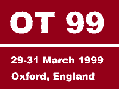

| Session types
|
 |
| The Object Technology conference has a tradition of active participation. We encourage conference sessions that bring people together to work and learn ñ in most cases, sessions are highly interactive, involving participants and session leaders on an equal footing. The types of session that typically make up the programme are described here, although if you are proposing a session and want to do something different, we always welcome new suggestions. | |
| Workshop |
Workshops are sessions in which participants work in a structured
way on a topic set by the workshop organiser. At the end of the workshop,
the participants, in conjunction with the workshop organiser, would normally
produce and make available to other participants some conclusions and,
ideally, suggestions for avenues worthy of further investigation.
Workshops may take many different forms and submitters are free to propose their own structure and process. It is very important that proposals are explicit about the process that will be followed. Session duration: 3 hours |
| Tutorial | A tutorial consists of a presentation on a clearly focussed topic
which is aimed at a defined category of software professional. For example
a tutorial could be aimed at experienced project managers, or at professionals
actively working on object-oriented design projects. You should have a
clear idea of what insights your participants will take away, and why they
will find these interesting.
While tutorials are expected to contain a certain amount of formal lecturing, you should try to incorporate a degree of interaction between participants, for example by including a quiz or questionnaire. Session duration: 75 minutes |
|
Working Group |
A working group is formed to conduct a detailed
exploration of some aspect of object technology, to identify how that aspect
of the technology can be advanced, and then to put in motion the work needed
to achieve this advance. Working groups are run to encourage the exchange
of ideas between object technology practitioners with the aim of generating
or encouraging progress that is applicable to the software community at
large. A leader of a working group may require some pre-conference input
from participants (submission of a position paper or preparation of a pattern
for review, for example).
Formal working group sessions take place on the afternoon of Sunday 28 March 1999, before the main conference. Groups may continue to meet during and after the conference. Session duration: 6 hours |
|
Goldfish Bowl |
A goldfish bowl provides an effective means of exploring the breadth
of opinion on a given topic. The session is started by a small discussion
group (say four or five people) consisting of specially invited participants,
with the rest of the participants forming an audience. Spare places in
the discussion group are available, and members of the audience may take
up these places when they feel they have a contribution to make. Members
of the discussion group leave their places when they have had their say,
making room for new participants.
The session should produce documentary output of the conclusions reached, typically in the form of a poster. Session duration: 75 minutes |
|
Think Tank |
A think-tank session consists of a small group of people meeting
to solve a particular problem or to find an agreed position on some issue.
Think-tank sessions are intensive, focused and produce concrete output
in the form of a poster for other conference participants.
The session leader is responsible for the process of the session, for any materials that may be needed, and for ensuring that the poster is produced. Session duration: 75 minutes |
|
Case Study |
A case study session aims to describe real-life
experiences and lessons learnt in implementing object technology. Discussion
of failures as well as successes is welcome. The experiences described
can be drawn from any aspect of object technology projects.
Useful topics to address in a case study session would be: background to why object technology was used; report on the experience of using object technology; what went wrong and why; what went well and why; what lessons have been learnt from the experience. Session duration: 75 minutes |
|
Soapbox (15 minutes) |
Unlike the longer, more in-depth conference sessions, Soapbox sessions
are an opportunity to give a quick-and-dirty presentation about
something - anything - in the world of software development that
interests, excites, puzzles, or worries you. A soapbox session is 15
minutes long - 10 minutes for presentation and 5 minutes for
questions. Four soapbox sessions will be grouped together in a single
75-minute time-slot and there will be a moderator to ensure that
everyone gets a chance to speak and be questioned.
A submission for a soapbox session should consist of a brief outline of the subject you are going to address, some indication of the session style (possibilities include: OHP slide presentation (3 slides maximum), product demonstration (non-commercial), poster presentation, demolition of a commonly-held position, or exposition of an unfamiliar one. Session duration: 75 minutes |
[Lead a session]
[Participating]
[Programme]
[Organisation]
[Sponsorship]
Web site host: TriReme International Ltd